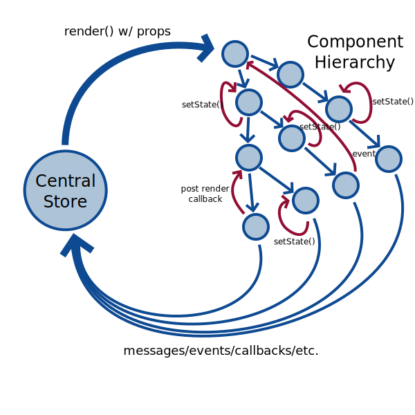

React and state management
From John Tsevdos / @tsevdos
Agenda
- What is React
- Why we need state management solution?
- What is Mobx
- Combining them
- Best practises
React is the V in MVC
- Provides an easy API to create web components
- Renders efficiently (using Virtual DOM) these components
- Handles two kinds of data: props / state
- Lifecycle events (ex. componentDidMount)
- Doesn't force you to a specific pattern or tool when it comes to data, but it favors Flux architecture
Why we need state management solution?
Things get chaotic quickly:
- Components share state
- State should be accessible from many different components
- Components need to mutate the state
- Components need to mutate the state of other components
The wrong way

The right way

Why Backbone Models are not ideal
- It wasn't developed for this job
- It doesn't provide a 2-way data binding or observer
- When data changes / mutates can cause unnecessary component rendering
Why use Mobx
- It's simple and scalable
- Uses vanilla Javascript for building your state (stores)
- It does all the heavy lifting
Mobx state management
- Observable state
- Computed values
- Actions
- Reactions
Mobx flow

Mobx core concepts: Observable state
ES6
class Todo {
id = Math.random();
@observable title = "";
@observable finished = false;
}
ES5
function Todo() {
this.id = Math.random();
extendObservable(this, {
title: "",
finished: false
});
}
Mobx core concepts: Computed values
class TodoList {
@observable todos = [];
@computed get unfinishedTodoCount() {
return this.todos.filter(todo => !todo.finished).length;
}
}
Mobx core concepts: Actions
store.todos.push(
new Todo("Get Coffee"),
new Todo("Improve Dashboard")
);
Unlike many flux frameworks, MobX is unopinionated about how user events should be handled.
Mobx core concepts: Reactions
import React, {Component} from "react";
import ReactDOM from "react-dom";
import {observer} from "mobx-react";
@observer
class TodoListView extends Component {
render() {
return (
<div>
<ul>
{this.props.todoList.todos.map(todo => <TodoView todo={todo} key={todo.id} />)}
</ul>
Tasks left: {this.props.todoList.unfinishedTodoCount}
</div>
)
}
}
Custom reactions can simply be created using the autorun, reaction or when functions to fit your specific situations.
Combining React and Mobx
React best practices
- Avoid component state (setState())
- Centralize state
Smart and dumb components
- Containers components
- Stateless (presentational) components
Benefits
- separation of concerns
- reusability (provide the needed props to stateless components and it's working)
- deal with the complexity in only one place
- very designer-friendly